This section contains some ceramic creations from Giannis Koutsoukos Skaris. These are the first steps. A small taste from the art of ceramics.
"In addition to the creation process, the feeling of giving something, I created, to a friend, is priceless. I want every friend's home to have a ceramic made by me"
#handmade #ceramic #clay #pottery
Μακαρόνια με φτόνο, σε χειροποίητο πήλινο μπολ [slab pottery]
// Διέταξαν να της δοθεί φαγητό να φάει, δια να αναλάβει δυνάμεις, κατόπιν της εξαντλήσεως που της είχε φέρει η μακρά...
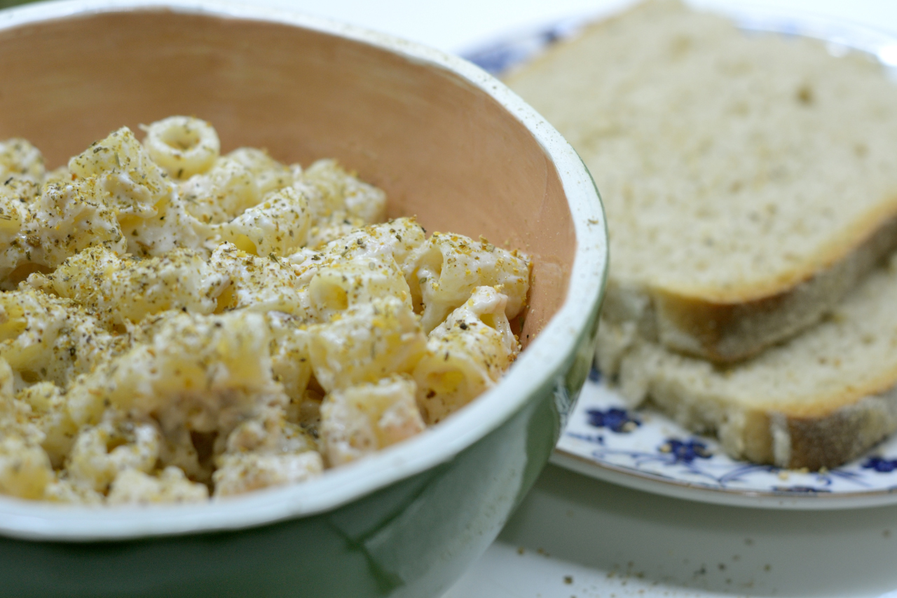
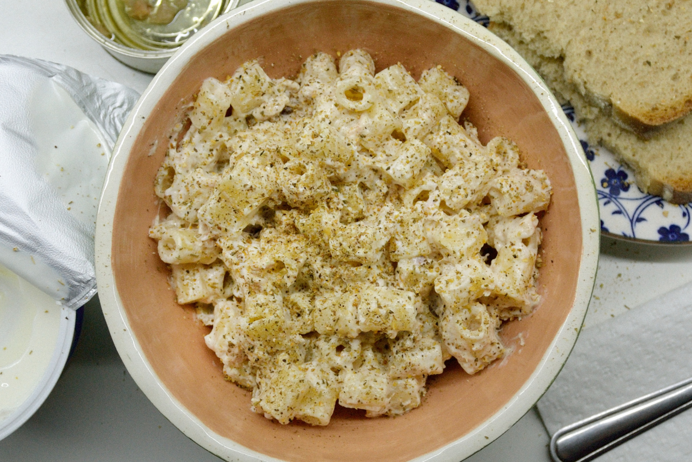
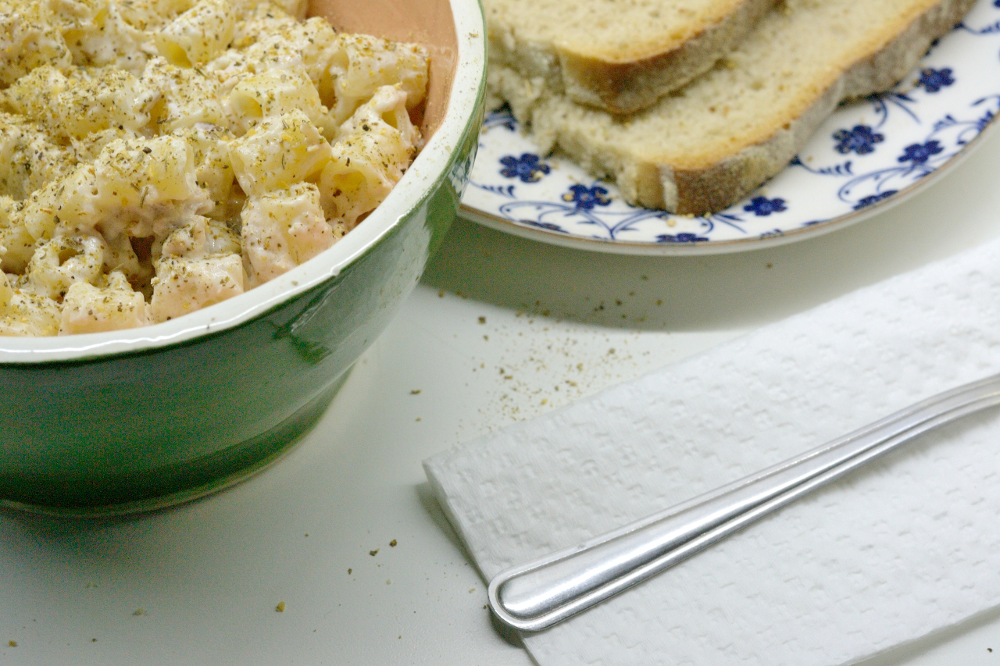
Σαλάτα κοτοπούλο με σάλτσα Βινεγκρέτ σε χειροποίητο μπολ [coil pottery]
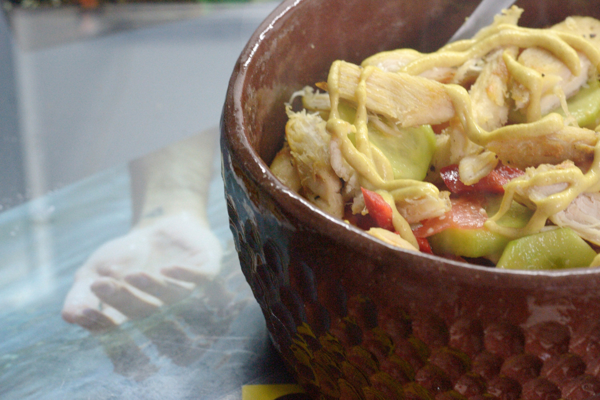
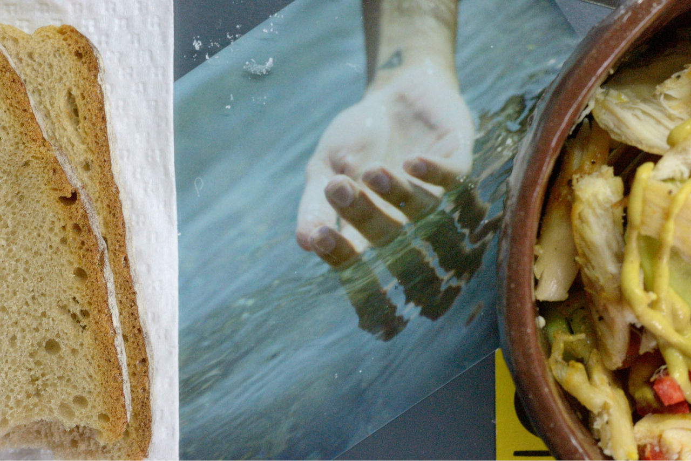
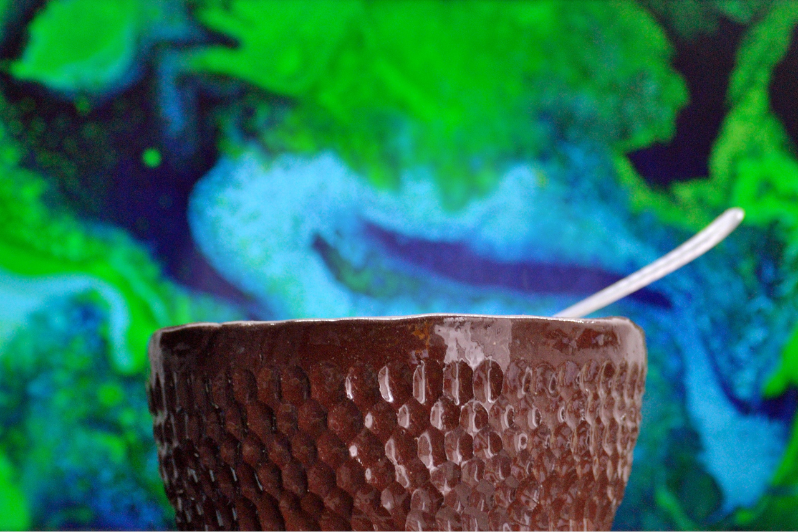
@tigris1312 | A Sip of Art


Παγωτό μπανάνα και σοκολάτα σε μπολ στιλβωμένο με Μινωίτικη τεχνική
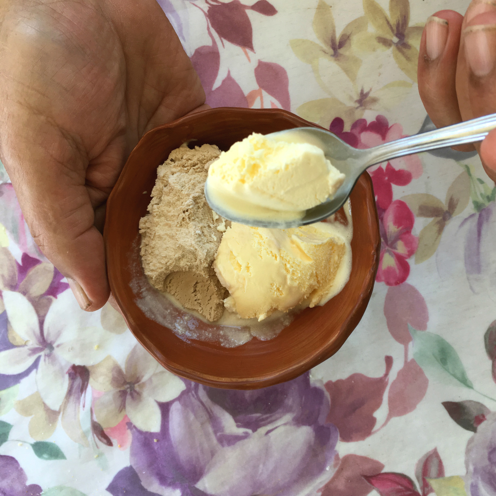
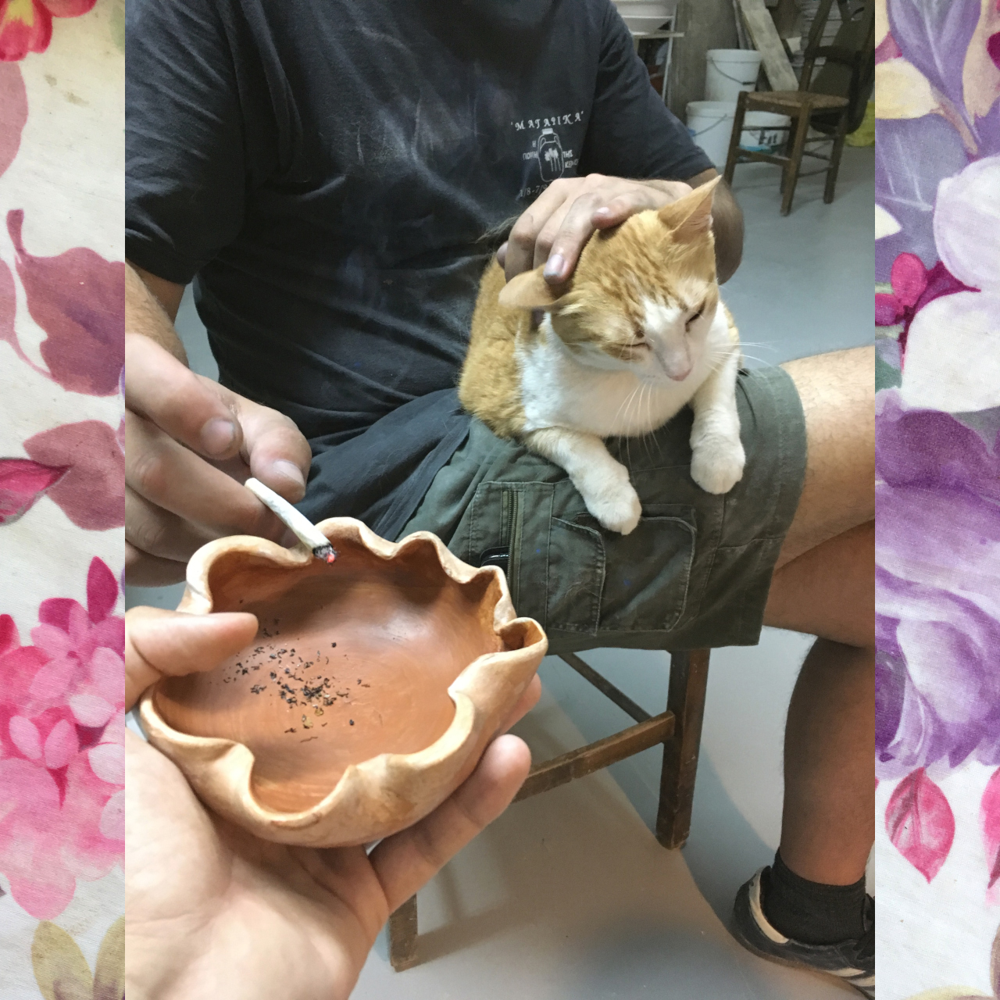
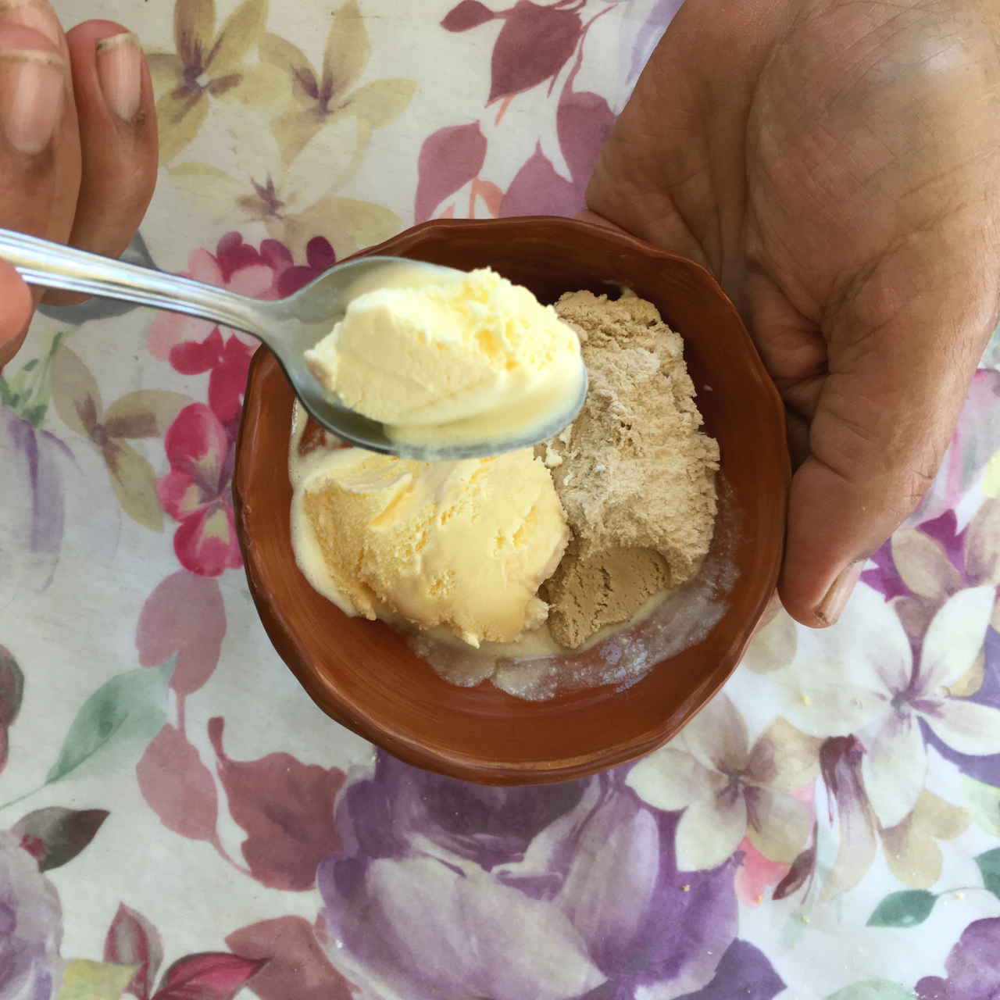
Κουπα για μικρους ανθρωπους με τεραστια χερια. [slab poottery]
//Φτιαγμενη με κοκκινο πηλο και τη τεχνικη του «ανοιγω φυλλο». Δεν εχει φυλο, ειναι φυλλο. φυλλο πηλου
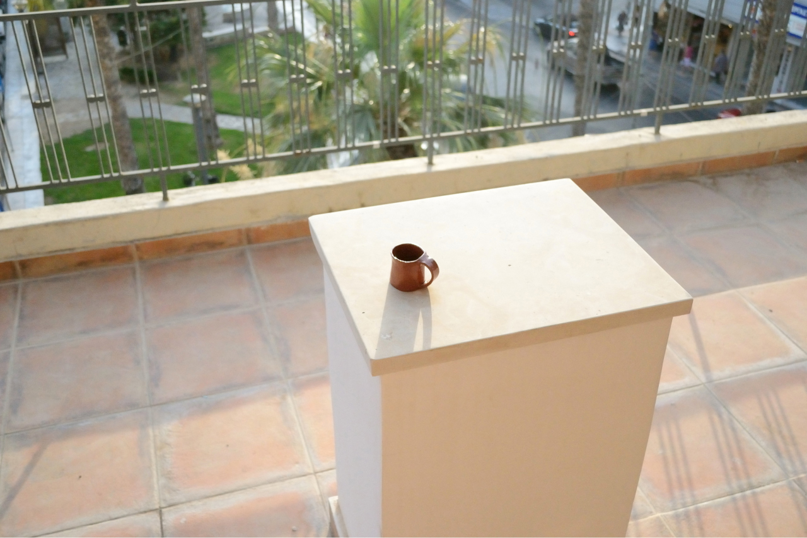
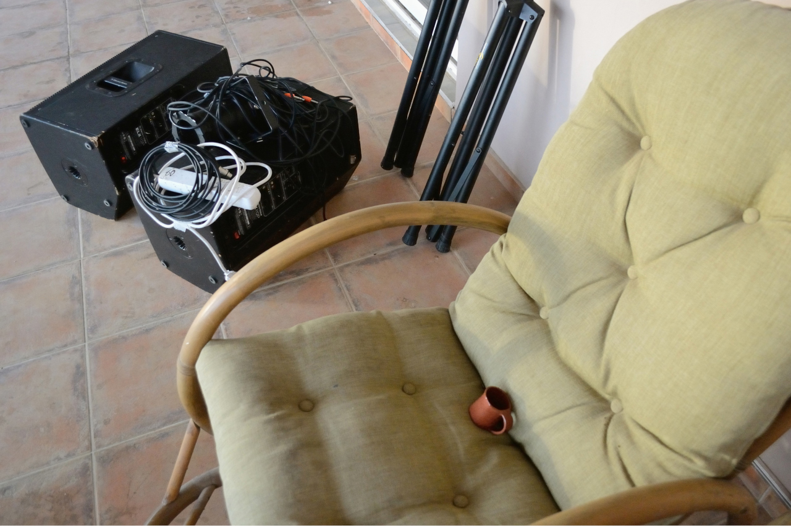
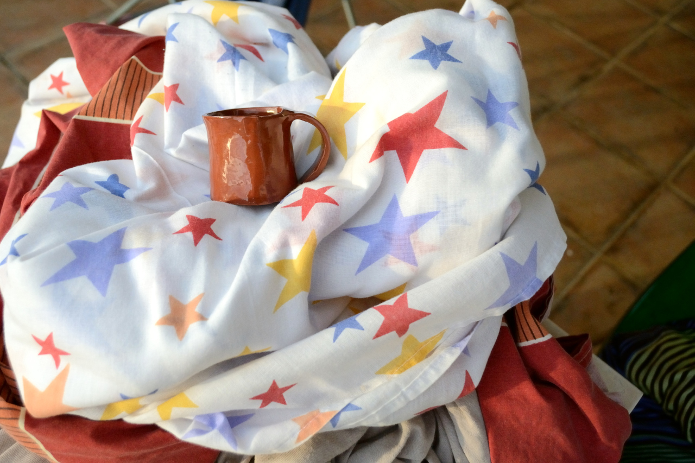